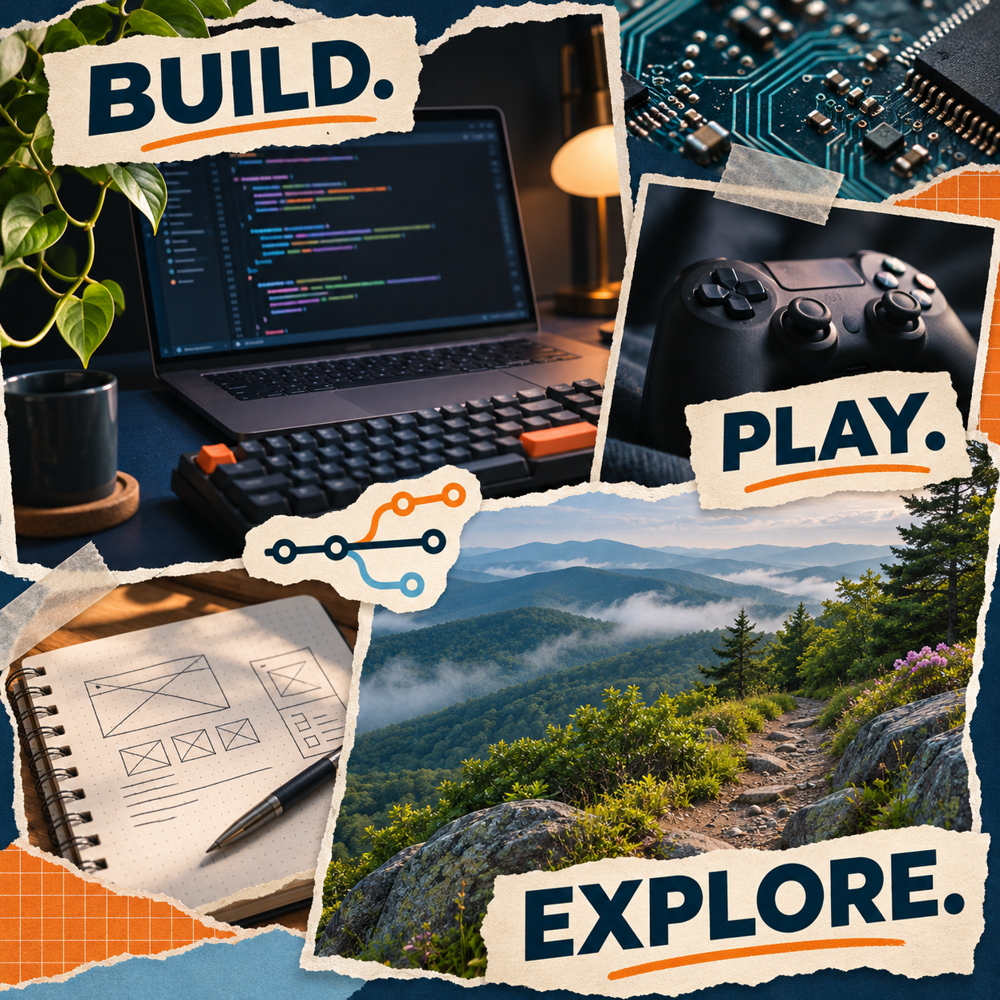

Jeel Dhanani
Developer
Hi, I'm Jeel Dhanani! I'm pursuing a bachelor's degree in Computer Science with a concentration in Information Technology at the University of North Carolina at Charlotte, graduating in December 2026. My interests include web development, troubleshooting, and building practical software. My skills include Python, Java, HTML, CSS, JavaScript, and Git. As a developer on our team, I enjoy solving problems and collaborating to turn ideas into working projects. Outside of school, I enjoy gaming, exploring new technology, hiking, and discovering new food spots.
Moodboard

Web Development
I enjoy turning ideas into useful websites with HTML, CSS, and JavaScript. Creating clear layouts and interactive features lets me combine creativity with problem solving.
Explore web development on MDNProgramming & Problem Solving
Python and Java inspire me to break complex problems into smaller steps. I enjoy practicing new concepts and finding ways to automate everyday tasks.
Explore the Python tutorialTechnology & Collaboration
My Information Technology concentration motivates me to understand how software and systems work together. Tools like Git, GitHub, and VS Code help me learn, organize my work, and build projects with my team.
Explore projects on GitHub